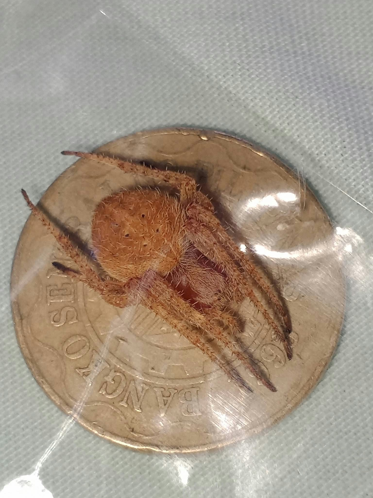

Welcome sa Mais Spider! Isa ito sa mga featured gagamba sa ating collection. Huwag magpaloko sa pangalan, hindi ito mais na may walong paa. Gago nga
May mga gagamba na gumagawa ng sapot para makahuli ng pagkain. Mayroon din namang direktang nanghuhunt. Iba-iba ang galawan nila!
Balikan ang nakaraan